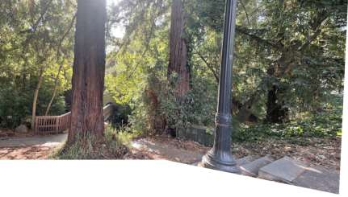
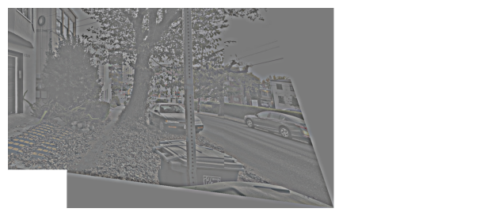
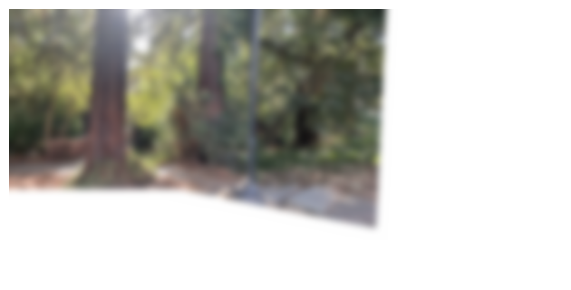

In this project, I play around with different aspects of image warping with a “cool” application -- image mosaicing. I will take photographs and create an image mosaic by registering, projective warping, resampling, and compositing them. We'll be doing this with homographies ;) and use them to warp images.

I shot some pairs of pictures at the same center of projection (meaning all I did was rotate the camera around its axis). It's important to maintain the same COP because otherwise we create a new variable, depth, and our homography cannot handle this!


A homography is a projective mapping between any two images with the same center of projection. Given a pair of correspondences betwen the two images, we can recover the homography to warp one image into another. Let's setup a matrix for this, where (x,y) is a correspondence in the source image and (x', y') is a correspondence is the destination image. \[ \begin{bmatrix} a & b & c \\ d & e & f \\ g & h & 1 \end{bmatrix} \begin{bmatrix} x \\ y \\ 1 \end{bmatrix} = \begin{bmatrix} wx' \\ wy' \\ w \end{bmatrix} \]
Expanding into a linear system... \[ \begin{aligned} ax + by + c &= wx' \\ dx + ey + f &= wy' \\ gx + hy + 1 &= w \end{aligned} \] Substituting the last equation. \[ \begin{aligned} ax + by + c &= (gx + hy + 1)x' \\ dx + ey + f &= (gx + hy + 1)y' \end{aligned} \]
Which simplifies to this in matrix form:
\begin{bmatrix} x & y & 1 & 0 & 0 & 0 & -xx' & -yx' \\ 0 & 0 & 0 & x & y & 1 & -xy' & -yy' \end{bmatrix}
Let's rectify some images! Since the homography requires correspondences on the source and destination image, and for these we don't have a "destination." We can specify points in the desired polygon we want to rectify to. For example, in the Steph Curry screen, I would select the four corners on the source image, and since we know that the screen is a rectangle, we would guess the width and height of a rectangle and use it as the destination correspondences. Same with the fish tank, I know the tank is a square so I use this information for the destination points.


First I naively aligned the images by taking a correspondence point on the image we are warping, then applying the homography to it. We take the difference between this warped correspondence point and the old one, to get how much we should translate the image.


These look pretty good! But notice that on the 1st and 3rd especially you can make out where the two images are stacked since the lighting isn't perfect.
In order to fix this, I implemented a 2-band “Laplacian Stack” blending. I reused some of my code from Project 2 in order to get a Gaussian blur on the full mosaic for the low frequencies and then I computed the Laplacian stack to get the high frequencies of the warped and unwarped seperately (before aligning them into the mosaic) so that only one image's high frequency is operating a time. If we didn't seperate the images, we would get awkward borders on the high frequencies where the two images meet.
I then added the low frequencies to the high frequencies to produce a smoother transition between images for the final mosaic.




The tree mosaic is perfect!!! :D